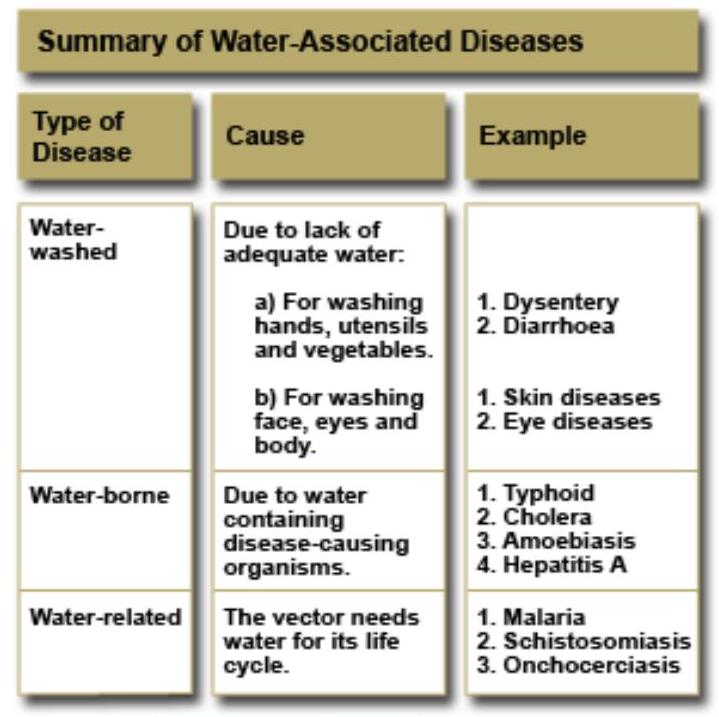
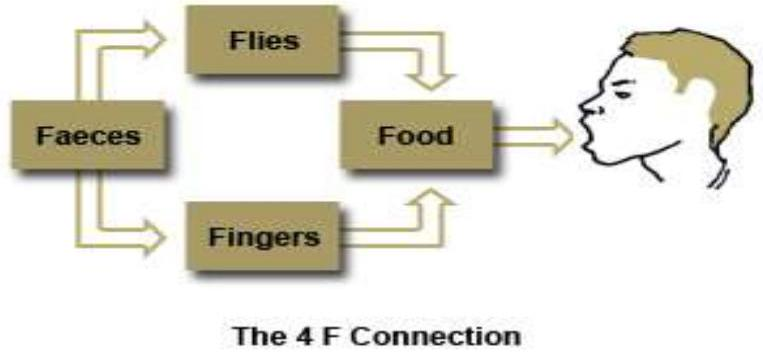
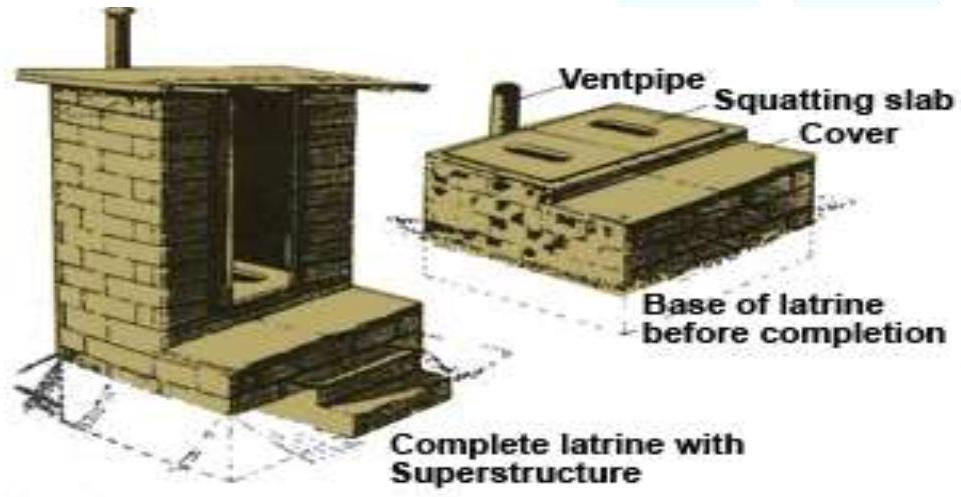
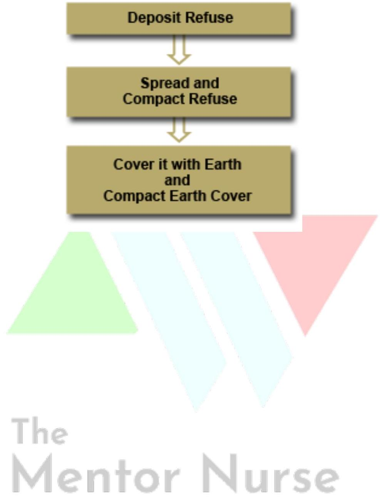

Section 2: Water and Sanitation
Introduction
The section is divided into three sub-sections. In the first one, you will look at water, identifying various water related diseases as well as sources of water, water contamination and the purification of water. In the second sub-section you will examine types of waste and finally, in the last sub-section, you will study methods of waste disposal.
Objectives
By the end of this section you will be able to:
- Describe the importance of water in relation to health
- Explain different types of waste
- Describe various methods of waste disposal
Water
Water is essential for life. It is found in every cell in our body and is necessary for most basic functions, like respiration, digestion and other chemical processes. More than 50% of human body weight is made up of water. Water is thus vital to health and survival but it may itself become the source of diseases, therefore, it should be properly treated and made safe for domestic use.
What role does water play in the transmission of the following diseases?
- Scabies
- Cholera
- Schistosomiasis
Role Played by Water on the Transmission of Diseases
Water may contribute to the spread of diseases in several ways. When there is not enough water, and people cannot observe basic personal hygiene, diseases like scabies, non-specific diarrhoeas, dysentery and trachoma spread. Such diseases whose spread is promoted by lack of adequate water are called water-washed (water scarce) diseases. Simply improving the quantity of water can prevent them.
Water can also contribute to the spread of diseases when it carries a specific disease-causing organism. Examples are typhoid, cholera, amoebiasis, hepatitis A, or poliomyelitis. Such diseases caused by contaminated water are called water-borne diseases, and the only way to prevent them is to improve the quality that is, the cleanliness of the water.
Finally, water can contribute to the spread of disease when it is necessary in the life cycle of a disease vector, for example malaria and schitosomomiasis. These diseases are called waterrelated diseases. Other water related diseases include: onchocerciasis (river blindness) and dracunculosis (guinea worm).
Uses of Water
Water is used in various ways. These include:
- Human consumption for body needs
- Animal watering
- Industrial use for manufacturing
- For recreational activities such as swimming
- To produce electricity
- Sustaining of aquatic life, for example, fish for consumption and export
- Household purposes like washing and cooking
Simple improvements at the community level are required to ensure adequate quality and quantity of water.
Sources of Water
Water does not stay in one place for very long - it goes round in a cycle. It evaporates from seas and lakes and falls back to the earth as rain. After rainfall, some of the water evaporates and the rest is drained into streams, rivers, lakes and ponds. The most important water for a community is the water that is held in the soil, by the roots of the trees in the forest. This is a community's long-term underground water store. This is why it is important for you to educate the community on the need to preserve their forests. There are four main sources of water namely rain water, surface water, underground water and sea water.
Rain Water
This water is relatively pure and clean. Its state of cleanliness depends on levels of atmospheric pollution and how it is collected. The cleanest natural water available is that which is collected from iron sheets into gutters and led by pipes into clean closed tanks. When the first rainwater falls, the last part of the gutters leading to the tank should be removed for some time to ensure that dirt on the roof does not enter the tank. One disadvantage of this water source is that it is difficult to collect from thatched roofs. The community health nurse can assist the community members to ensure collection of clean water.
Surface Water
This type of water includes shallow springs and shallow wells, streams, rivers, dams, ponds and lakes. A spring is a natural issue of underground water. When the rainwater falls on the surface it sinks into the ground until it reaches the impermeable layer of rock, which it cannot go through.
All the water above this layer is called surface water. If it finds a point of issue it is called a shallow spring. If a well is dug into it, it is called a shallow well, despite its depth. The quantity of water yielded by shallow springs or wells varies according to the season. They may dry up during droughts and are liable to contamination by latrines.
A river is a large mass of flowing water. During the rainy season, its waters become turbid, while in the dry season they are clear. River water has a lot of impurities obtained from human and animal waste, washing, sewage, agricultural waste and industrial waste. Other sources of water are dams, ponds and lakes. All these sources provide fresh water. Remember you have fresh water lakes in this country, which includes Lake Victoria, Lake Baringo, Lake Turkana and Lake Naivasha. However, the water from these sources is often unclean and not safe for drinking. It is therefore important to identify suitable ways of rendering it safe.
The quality of water depends on the location of its sources. If the water source is from the forest, hills and valleys, it is clean and suitable for household use with little or no prior treatment. This is because there is no human settlement, which might be a source of potential pollutants, at or around the water source. On the other hand, streams, rivers and lakes around or within towns and villages are likely to be contaminated by human and animal waste. It is, therefore, important to protect water sources from human settlement or animal grazing.
Sea Water
This water is salty and requires expensive purification processes to make it suitable for drinking. In your country you have several salty lakes, which are Lake Magadi, Lake Bogoria and Lake Elementaita. There are also the salty waters of the Indian Ocean.
Underground Water
The water that gets under the impermeable layer of rock is called underground water. It is the water between two impermeable layers of rock, one above and the other one below. This water finds an outlet through a fissure or crack in the upper layer of the rock. Water from this issue is obtained as a deep spring, a well or a borehole.
Sources of Water Contamination
Water has the ability to absorb substances and gases, for example, oxygen and carbon dioxide as it falls as rain. It also absorbs minerals, for example, different salts from rocks or even dangerous chemicals from industrial wastes.
Collecting surfaces for rainwater may have leaves, insects, bird droppings and animal faeces on them. When water runs over the earth it may become contaminated with human or animal excreta, refuse, fertilizers or industrial wastes. Excreta and refuse may contaminate shallow wells. Wells may also be contaminated by the use of dirty containers for drawing water or by oil from a pump. Bathing, urinating, defecating in water, washing clothes and animal watering may contaminate rivers, lakes or dams. Even piped water may become contaminated from leaks in the pipes, especially when they pass near dirty drains or when it is collected in contaminated containers. Water may go bad if it is uncovered or stored for too long in a pot or cistern. Finally, it is important to remember that water from any source may become contaminated if it is drunk from dirty or communal drinking vessels.
Protection of Water Sources
Water sources are precious and must be kept free from contamination.
Rain Water
The protection of rainwater sources is done by the use of gutters led by pipes into a small waste drain tank and into a clean closed tank. As you have seen earlier, the first rainwater cleans the roof and the last part of the gutter should be disconnected to render the water clean.
Surface Water
To protect surface water, people should not settle around springs, streams and rivers. People and animals should be kept away from water catchments areas, normally in the forest or up the hills.
Springs
- Clear the bush or long grass around the site of the spring.
- Put up a fence around the spring to prevent animals from grazing and children from playing around it.
- Dig a drain about 15 metres from the spring to divert surface water.
- Build a strong retaining wall around the 'eyes' point from which water flows out from underground. This wall holds water from the 'eyes' of the spring.
- Fix the delivery pipe at a height close to the level of the 'eye' but high enough to allow the water containers to stand below the pipe.
- Build steps to the spring as well as a platform on which to place the containers when collecting waters. The area behind the retaining wall should prevent contamination without interfering with the water flow.
- Design an area for washing and for watering the animals.
- Select a caretaker to maintain the protected springs.
With this knowledge, you will be able to work with the public health technician or officer in protecting water sources in the catchment area of your health facility.
Wells
- The site should be selected at least 100 metres from a pit latrine or other likely source of contamination.
- The sides of the well should be built with stones, rocks, or cement culvert.
- The sides above the surrounding ground should be constructed with a sloping waterproof area to avoid dirt from getting into to the well.
- A strong well cover should be put in place.
The community health nurse and community members should identify practical methods for protecting the water sources in the community. The public health technician or officer can offer technical knowledge on silting of springs and wells.
Purification of Water Sources
Chemicals can be used to purify water sources. lodine is a disinfecting agent used as 2% tincture. Two drops are sufficient to disinfect one litre of water. lodine tablets such as Globaline® and Potable Aqua® (trade names) are also used in the sterilisation of small amounts of water as directed by the manufacturer. After the treatment of water, it is important to store the water safely to prevent recontamination. A safe storage container is a narrow mouthed container that has a lid. The drinking water should not be removed from its container by dipping a potentially contaminated vessel. Instead, it should be poured out of the container or the container should be fitted with a tap. The community should be educated on simple and practical ways of protecting their water such as the safe water system.
Safe Water System
The safe water system is a household-based water quality intervention in response to the need for inexpensive, alternative means of water treatment and storage in the short to medium terms. The intervention has three components:
- Water treatment in the home
- Safe storage
- Behaviour change techniques
The main goals of safe water systems are:
- To improve the microbial quality of water in the home by means of sustainable technology
- To reduce morbidity and mortality of diarrhoea diseases related to contaminated water
- To improve hygienic behaviour related to water use
Chlorination
Chlorine is added to water that has been filtered on a large-scale for supply in cities and towns. Chlorination is the final safeguard of the quality of water. The amount of chlorine added to the water should be proportioned to the volume of flow and to the chlorine demand of water. Chlorine should be properly mixed and there should be a minimum contact period of 30 minutes, for it to be effective against pathogenic organisms in water. For household use, 1% of chlorine is recommended. This is normally in the form of Jik®, or Water Guard® which are trade names. Chlorine should be properly mixed and there should be a minimum contact period of 30 minutes.
Sanitation
Types of Waste
Man produces waste wherever he is and it is necessary to manage this waste properly to prevent diseases.
There are two types of waste: solid and liquid. Liquid waste includes excreta and wastewater. Solid waste is also known as refuse.
Liquid Waste
Human excreta are faeces and urine. They are a source of pathogenic organisms. Excreta are offensive to both sight and smell and can also lead to the contamination of water and foods. Faecal organisms may infect people directly or indirectly through an intermediate host. Human excreta may spread the following diseases:
- Typhoid fever
- Cholera
- Intestinal worms
- Poliomyelitis
- Infective hepatitis A
- Bacillary and amoebic dysentery
Urine carries the infective ova of schistosoma heamatobium while faeces spread the schistosoma mansoni. Faeces should not be accessible to fingers, feet, flies and food. The fingers and flies transfer the faeces to the food through the faecal-oral route transmission, known as the 4 F connection, which is illustrated in the adjacent figure. It is, therefore, necessary to help people understand the importance of proper excreta disposal by use of simple and cheap facilities. As a nurse, you should be able to identify possible customs and beliefs, which hinder proper excreta disposal in the community and educate the people accordingly.
Solid Waste
Solid waste or refuse is defined as any unwanted discarded material, the remains, residual or by-products of human activities which are no longer required for further use by the initial producer. This is normally in the process of:
- Preparation
- Manufacture
- Packing
- Other human related activities
If solid waste is not disposed of properly, it may create a number of problems:
- It may produce an offensive smell
- It attracts insects, vectors/pests particularly flies, cockroaches and rats
- Spreads diseases
- It can cause pollution of air, water or food
- It can cause accidents, for example, fires, cuts and falls
There are various sources of solid waste. These include domestic waste, street waste, industrial waste, hospital objectionable waste and garden/agricultural waste.
Domestic Waste
This usually consists of all the garbage that emanates from inside a house, for example, food leftovers, potato and banana peelings, waste paper, worn out clothes, shoes, broken utensils, bottles and tins.
Street Waste
This type of refuse consists of paper, food and commercial refuse in public places such as markets and hotels. Scrap metals may also be included in this category.
Industrial Waste
This varies with the type of industry. Modern industries produce chemical wastes, which are potentially hazardous to man and other living things. The wastes may be toxic, caustic, acidic or flammable. This means that they need special disposal. If the chemical waste is to be discharged into a stream it should be processed first. If it is solid, it should not be dumped on land as it may eventually seep underground and contaminate water sources.
Hospital Waste
This is the most familiar waste that nurses are aware of. It includes the following:
- Sharps, that is, needles and syringes
- Gauze and cotton wool swabs
- Vials and Lotions
- Drugs and vaccines
- Tubing, gloves and papers
- Foetuses
Health workers have the responsibility of maintaining infection prevention by proper decontamination and disposal of the above waste.
Garden/Agricultural Waste
Agricultural waste from coffee, sugarcane, sisal, pesticides and fertilizers may result in the pollution of natural resources such as air, food, and water.
Waste Disposal
You will now look at various methods of waste disposal, covering the disposal of both liquid and solid wastes.
Liquid Waste Disposal
The best method of excreta disposal in rural areas is a pit latrine, while toilets are suitable for urban areas. As a health worker, it is important for you to know how a pit latrine is constructed. There are some general guidelines that should be considered when choosing the site for a pit latrine to ensure that water sources among others are not contaminated.
Some of these guidelines are:
- Pit latrines and cesspools should be at least two to three metres respectively above the water table
- Latrines should be located at least six metres away from the buildings
- Wells should be located upstream to avoid contamination of the well by ground water passing through the pit latrine or cesspool
The excreta disposal system is divided into two categories. These are:
- $\checkmark$ water carriage system
- $\checkmark$ non-water carriage system
The water carriage system, excreta are disposed by the use of a flush toilet, which is also called a water closet. The flush toilet is the most permanent and hygienic method of excreta disposal. This system is used where there is a permanent, continuous and adequate piped water supply system. This is mainly in cities and towns.
Water closets are reliable and convenient for any permanent building. The excreta are carried by water pressure into a septic tank or sewage pit. The clear fluid effluent needs further bacteriological treatment to become inactive. It is then led over stones and sand in underground drains for completion of biological decomposition. The solid part of the excreta (sludge) settles at the bottom. The sludge relies on natural decomposition. It is reduced in volume and is ultimately converted into inoffensive unstable product. However, the water carriage system is very expensive, technical and requires sewage treatment works.
The Non-water carriage system
In this method, excreta are disposed of by deposition in a pit latrine. The pit latrine is the most important waste disposal method in the rural areas. In its simplest form, the pit latrine consists of the following:
- A hole in the ground
- A squatting place for sitting or standing
- A hut or shelter for privacy
In this way the excreta is safe from fingers, feet, flies and food. Making a concrete slab, which is easier to wash and keep clean, should strengthen the squatting place. The hole should have a cover with a handle, which ensures that flies do not breed or get in and out of the latrine.
You need to consult your public health officer to give you more information on ventilated improved pit latrines, which are found in many villages. These latrines feature vent pipes designed for controlling flies. You will have seen them in the community.
The main advantages of a pit latrine are:
- It does not require piped water supply
- It is cheap to construct as the materials are locally available
- The community does not need close supervision during the construction
As already mentioned, there are various other types of pit latrines. The borehole latrine is bored into the ground about six metres deep and four metres in diameter instead of digging a pit. It has a smaller volume and fills up faster than a pit. It is faster to install, and is appropriate following disasters where there is urgent need to install many latrines. The trench latrine is a latrine where a trench is dug and a number of holes with dividing partitions constructed over it. These types of latrines are used in temporary work camps. Bucket latrines are also known as pail closets and are used where the water tables are high. A squatting slab or seat is placed above the bucket, which is filled within a few days. Some of the negative aspects of this type of latrine are the unpleasant job of emptying it and the spillage, which attracts flies. Finally, the composting pit latrine is suitable where the water table is too high for a deep pit latrine to be dug. From this description of liquid waste disposal, you should now be in a position to assist the community to construct and use hygienic disposal methods.
Solid Waste Disposal
The amount and type of refuse produced varies from one community to another, as does the means of disposal. Usually, solid refuse disposal is not a problem in the rural areas except around shops, markets or other places where people aggregate. However, in big cities such as Nairobi, Kisumu and Mombasa, there is indiscriminate dumping of domestic and industrial refuse. Health facilities, especially, should set a good example by employing hygienic methods of refuse disposal. Refuse in towns should be stored in proper containers. These containers should be:
- Watertight plastic or metal with a tight-fitting lid or polythene bags
- Rust resistant
- Easily filled, emptied and cleaned
- Have side handles
- Rest on a concrete slab to ensure cleanliness of adjacent ground
In towns collection should be regular, systematic and reliable. Specially constructed vehicles for this purpose can be found in big towns such as Nairobi, Kisumu, Nakuru and Mombasa. In rural areas you should get the support of the village health committee and arrange for refuse to be collected and disposed of regularly, especially after market days. Simple methods of refuse collection should be encouraged in rural areas.
Advantages of Proper Waste Disposal
Proper solid waste disposal has several advantages. These include the prevention of:
- Breeding of pests and vectors
- Foul smells
- Contamination of water sources
- Accidents from sharp objects
- Overcrowding where space can be created for better utilisation
The health department and municipalities are responsible for refuse disposal in towns. The choice of disposal method is determined by its cost. In the rural areas the health worker and the village health committee are responsible for refuse disposal in individual houses, shops, hotels and markets.
Dumping
This can be in the sea or river. In Kenya, this method is most often used in the towns along the coast. This becomes a health hazard and the littering of the shoreline is an unpleasant sight. Another commonly used method is open dumping, which should be discouraged. Open dumps provide breeding places for rats, mosquitoes and flies.
Burning
This may be done in a number of ways. These include:
- Simple open air burning
- Burning in a trench
- Using a simple mud-brick incinerator
The open burning of combustible refuse is frequently used but it is not very effective. This method often leaves tins and broken bottles littering the surrounding area. This can cause accidents, especially to children. The smoke and odour contribute to air pollution. There is a fire risk and the rubbish sprawls all over while awaiting burning. It may become a breeding place for rodents and insect vectors.
Incinerators are an improved way of burning combustible refuse. Incinerators can be simple and cheap, or complex and expensive. Among the cheap ones is the bin incinerator made out of a drum with fire bars across it and air holes underneath. A more expensive one is built out of brick and fitted with chimneys. These incinerators allow more complete combustion and produce less smoke. Most hospitals use incinerators.
Composting
Composting is "a process in which, under suitable environmental conditions aerobic microorganisms break down organic matter to fairly stable humus" (A. D. Luca and H.M. Gilles, 2003). The decomposition process occurs naturally on the ground when droppings from the trees and animals are converted by micro-organisms to humus. Aerobic composting is normally odour free. This method is, cheap, convenient and recommended especially in rural areas. Wet and dry refuse is heaped in alternative layers on to a plot about 2.5 square metres to a depth of about 1.5 square metres. The refuse is then covered with grass and earth. Compost requires frequent turning after 30 days then after 60 days. This turning helps to distribute all parts of the heap to undergo the high temperature of the interior. After 90 days the refuse is ready to be used as manure.
Controlled Tipping
This method involves depositing refuse into depressions or large holes in the ground. These tips should be situated at least half a kilometre away from settlement, preferably out of sight and down wind. This is an effective method for hygienic disposal of refuse. It can be used where sufficient land is available. The method consists of three steps as illustrated in the diagram on your right.
Recycling
This is a method of re-using non-biodegradable refuse such as paper, bottles, plastics, metal cans and so on. Although it requires special processes to render the items suitable for reuse, it is a method that should be encouraged.
